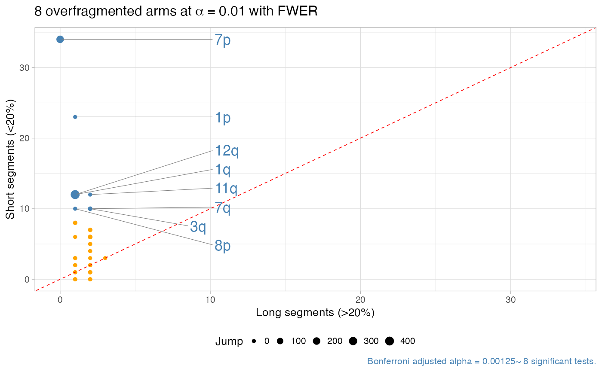

R/plot_arm_fragmentation.R
plot_arm_fragmentation.RdThe function produces a multi-panel figure. The top left
panel shows a scatter of the segments' length per arm, and
their jump value. The bottom panel uses a circular layout
to show arms, and can be activated setting zoom > 0
(default is 0). In this case dashed lines outgoing the centre
reprent breakpoints not shown in the plot (i.e., with Major > 5).
plot_arm_fragmentation(x, zoom = 0)
| x | A `CNAqc` object. |
|---|---|
| zoom | Number of maximum zoom panels to show in the bottom of the figure. |
A ggplot object for the plot.
data('example_dataset_CNAqc', package = 'CNAqc') x = init(example_dataset_CNAqc$snvs, example_dataset_CNAqc$cna,example_dataset_CNAqc$purity)#> [ CNAqc - CNA Quality Check ] #>#> ℹ Using reference genome coordinates for: GRCh38.#> ℹ Drivers are annotated, but 'gene' column is missing, using mutation location.#> ! Missing CCF column from CNA calls, adding CCF = 1 assuming clonal CNA calls.#> ℹ Input n = 12963 mutations for 267 CNA segments (267 clonal, 0 subclonal)#>#> ✓ Mapped n = 12963 mutations to clonal segments (100% of input)#> ℹ One-tailed Binomial test: 8 tests, alpha 0.01. Short segments: 0.2% of the reference arm.#> ✓ chr7p, p = 1.71798691840001e-24 ~ 34 segments, 34 short.#> ✓ chr1p, p = 1.62738995200002e-15 ~ 24 segments, 23 short.#> ✓ chr11q, p = 2.4788992e-07 ~ 14 segments, 12 short.#> ✓ chr1q, p = 4.34176000000001e-08 ~ 13 segments, 12 short.#> ✓ chr12q, p = 4.34176000000001e-08 ~ 13 segments, 12 short.#> ✓ chr3q, p = 4.52608e-06 ~ 12 segments, 10 short.#> ✓ chr7q, p = 4.52608e-06 ~ 12 segments, 10 short.#> ✓ chr8p, p = 9.21599999999998e-07 ~ 11 segments, 10 short.#> ℹ 8 significantly overfragmented chromosome arms (alpha level 0.01).plot_arm_fragmentation(x)